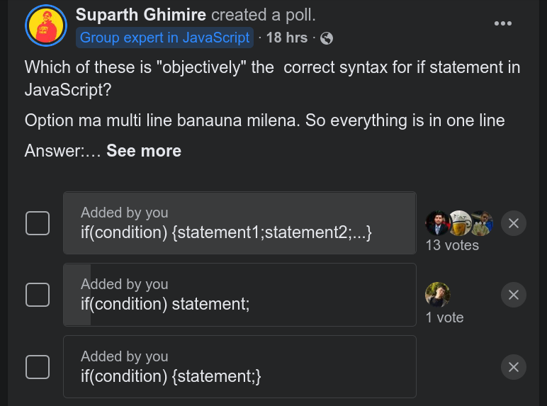
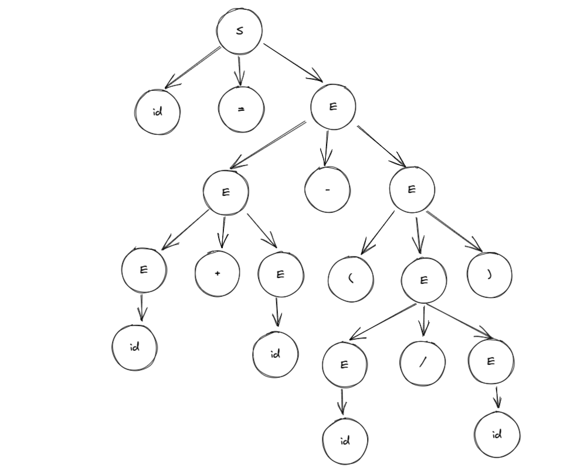

Suparth Narayan Ghimire
suparthnarayanghimire2014@gmail.com
977-9848952466 🇳🇵
Kathmandu, Nepal
Skills and Abilities
- Excellent Proficiency in NodeJS and Express to create server side applications using
REST APIsandGraphQL - Great knowledge of Client Side Libraries and Frameworks -
HTML/CSS,SCSS,Next.js,React - Experiece in working with version control -
Git/GitHub - Worked on Multiple Projects using databases such as
MySQL,ProstGreSQL,MongoDB - Experience in
Web SocketsusingSocketIO - Currently Learning Technologies:
DevOps Practices,Go,Docker
Work Experience
-
Design System in Next.js
March 2021 - Current
Aspark Systems- Created Design System for a Educational Platform using custom CSS designs and React Bootstrap.
- Integrated Existing REST API to design components.
- Worked on Agile Development Environment with Continuous Integration/Continuous Development.
-
Next.jsFrontend Development
December 2021 - February 2022
Aspark Systems- Integrated Existing REST API with frontend design for company's long term client
- Worked on Agile Development Environment with Continuous Integration/Continuous Development.
- Created Multiple Resuable Components in the Application along with using preexisting templates.
-
Valley Public Scool RMS
June 2020 - September 2020
Freelance- Created Result Management System for Valley Public School
- Used Latest Design Patterns,
REST API,MySQLdatabase and pug templating engine to create entire full stack application
Projects and Community
-
School Management System
SMS for Any School- Featrures to Manage Students, Teachers and Employees
- Features to Manage School Finances
- Features to Manage Student's Academic Performance (Result System)
- Integrates REST API with Frontend Application
- Github
-
Talk
End to End Encrypted Chat Application- Chat Application that uses AES encryption and Diffie Hellman Key Exchange to let users Chat to each others securely
- Backend Code | Frontend Code
- Demo
-
Express CMD
CLI Tool -
Path Finding Visualizer Visualization Tool
Blogs
- Functional Programming in JavaScript
- JavaScript Local Storages
- CSS Theme Switch
- Skeleton Screens Using Vanilla JavaScript
- Simple GitHub Profile Page Display APP using GitHub API and Flutter using BLoC Pattern
Education
- Tribhuvan University - BscCSIT 2019 - Current
You Don't Understand Statements (in JavaScript)
You think you do, but you dont.
What?
From the day we started to learn programming, few words are fed to us. Variables, constants, functions, classes, statements etc. All of them are very easy to understand, but something about statements always seem confusing. It is not something that needs to be understood completely to be able to write a program though! I mean we can all write a simple program to add two numbers in programming language of choice right? Even further, we can create a calculator application using if and switch statements along with arithmetic operators. Then what is all the fuss about? Why am I writing this blog? It might feel redundant at first, but believe me when I say you don't fully understand the meaning behind statements in low level computing (what compiler understands).
Why?
Why is this important? Why am I reading this blog? Why should I care about it when I can create a server to create REST APIs and an entire full stack application? I know how control statements work. What is your point?
Statements are fundamental building blocks that make or break a programming language. Knowing how something works does not mean you fully understand what it means. Many of us are not privy to the concept of how compilers work, and how the code we write gets compiled. The legend Linus Torvalds once said "If you think like a computer, writing C makes sense" and "When I read C, I know what the assembly language will look like"
Here is the video where he says this
You can intrepret this in anyway you like, but what I understand is writing code in a language means you need to understand what it is going on underneath. Knowing how to do something to make it work isn't enough.
Point?
Saying this, I know many of us already know the meaning of statements and how they work in respective programming language of choice. But I did a poll recently in an IT Community - ITSNP (its a great community. Join Here if you have not already)
The question was
- Which of these is "objectively" the correct syntax of if statement in JavaScript?
if (condition) statement;if (condition) { statement; }if(condition) { statement 1; statement 2; ... }
Answer it before moving further to see if you were correct.
Poll Result
This was the result of the Poll.

Before providing the answer to the question of the poll lets understand what statement means and how do they work.
Statements
We have all heard that variables/operators/functions make an expression and expressions make up statements.
Example:
a + b;
is an expression and
c = a + b;
is a statement
This shows that the common syntax for any sequence of characters to be a statement is
Generalization
variable = expression;
Okay. But we also have if statements, for statement, while statement? What are those? They don't follow this syntax. Are they not statements? They are. That is why this traditional definition of statement is not correct.
Correction
The correct definition of statement would be:
A command given to the computer to instruct it to perform some action.
The thing to note here is the phrase instruct it perform some action.
Not task, but action. If you replace the word action by task
then the definition:
A command given to the computer to instruct it to perform some task.
would define a program.
Action?
Action can be anything.
- Perform arithmetic operation
- Check for boolean logic
- Jump to some other part of program etc.
These actions all are classified into different types in different programming languages.
In JavaScript some of them are as follows:
- Expression Statement -> (all statements ending with semicolon ";")
- Jump Statement -> (Function Calls)
- Labeled Statement -> (Switch Case)
- Selection Statement -> (if else statements)
However, compiler understands statements by generalizing them in 2 different types.
- Simple Statement: Single Statement
Single Statements are usually written in a single line
Example:
let y = 3 + 10;
The next one is Compound Statement, which we will discuss after a while.
Statements in the Madness of CFG - Compiler Design
Note: to avoid confusion I am not writing the examples of CFG here in the preffered convention, but as simple single Uppercase characters
A compiler reads statement as a syntax. The syntax of a compiler is understood as a grammer. The grammer is known as Context Free Grammer or CFG.
A CFG for representing syntax for simple arithmetic statement can be written in this way
S -> id = E
E -> E + E | E - E | E * E | E / E | (E) | id
These are read as
Sproducesid = E- E produces
E + EorE - EorE * EorE / Eor(E)orid
This only is a simple representation. This does not represent everything
Here id is a terminal symbol (assume a variables for now)
S and E are non terminal symbols. S means Syntax and E means Expression who are recursive in nature.
WTF?
I know this is confusing, but bear with me for a moment
Imagine this being a recursive function, where the production of terminal symbom (id) is the base case, and production of non terminal symbols (S and E) are recursive case.
Say a compiler has to parse this arithmetic statement
x = a + b - a / b;
Then a syntax tree is formed this way
Breakdown | Reason
-----------------------------------------------------------------------
S -> id = E | (Production of S)
rm -> id = E - E | (E produces E - E -> recursive breaking)
rm -> id = E - (E) | (E produces (E) -> recursive breaking)
rm -> id = E - (E / E) | (E produces E / E -> recursive breaking)
rm -> id = E - (E/id) | (E produces id -> recursive breaking)
rm -> id = E - (id/id) | (E produces id -> recursive breaking)
rm -> id = E + E - (id/id) | (E produces E + E -> recursive breaking)
rm -> id = E + id - (id/id) | (E produces id -> recursive breaking)
rm -> id = id + id - (id/id) | (E produces id -> recursive breaking)
rm means right most
the end of this recursive definition resulted in all production reaching a terminal symbol. This means the statement
x = a + b - a / b;
is correct.
This creates a syntax tree that looks like this

If you see closely, this approach is similar to solving a simplification problem using BODMAS rule. This is how compiler parses an arithmetic statement.
If you want to learn more about Context Free Grammers, here is a link to series of videos along with written material by Daniel Shiffman. Contect Free Grammer
I know this is confusing and it might seem like I am going off topic, but giving you context before jumping forwards was necessary.
Compound Statements
We discussed the syntax of a simple statement above right. Then what would be the syntax for a compound one?
First we need to change the way we define a simple statement, not as simple expression but a sentence of logic such as
- It is raining
- It is cold
etc.
These are simple statements in logic, which are represented by
- p: It is raining
- q: It is cold
Compound statements then can be created by combining them using conjunctive words like and, or, if..then
Example:
| Description | Symbolic | Statement |
|---|---|---|
| p and q | p V q | It is raining and it is cold |
| p or q | p ^ q | It is raining or it is cold |
This shows that compound statements dont need to be in multiple lines. Compound statements mean combination of simple statements. Simple statements in multiple lines are called Collection of multiple statements. Collection of multiple simple statements are one of the production of compound statements.
Hence, c = a || b, d = a && b, etc. they all are compound statements as they combine two or more simple statements.
A question then, are a + b, a - b compound statements?
No. Why? These operators donot combine two statements, but they provide a single answer by doing an operation.
Answering the Mystery
| Description | Symbolic | Statement |
|---|---|---|
| p implies q | p => q | If it is raining then it is cold |
We see that if statements ar a compound statements as they comprise of multiple simple statements.
Hence, in JavaScript, if we had to create a production for if statement syntax, we would create it this way
Using proper naming convention for CFG here
<stmt> -> if(<expr>) <stmt>
<stmt> -> <compound_stmt>
<compound_stmt> -> { <stmt_list> }
<stmt_list> -> <stmt> <stmt_list> | epsilon
The answer
Compilers read code from a *.js file. They all are bunch of characters written together. We programmers write code in a way that the compiler understands. There are certain predefined structure to write a syntax for alot of statements. If being one of them.
The syntax above is how if statement is defined in JavaScript. What does that mean?
It means that whenever it encounters the word if, an opening parenthesis must follow it. There must be an expression following it. Expression here is a non terminal symbol, thus it's production is defined somewhere else. After expression ends, a closing parenthesis must follow.
The next thing we see is a non terminal symbol called stmt, not a opening curly brace. Stmt is a non terminal symbol which then yields a compound statement. This then yields another production that has a curly brace in front. However, stmt doesn't only yield a compound statement.
Here are some that is produced by stmt
<stmt> -> id = <expr>;
<stmt> -> if (<expr>) <stmt>
<stmt> -> while (<expr>) <stmt>
<stmt> -> do (<expr>) <stmt>
<stmt> -> for (<stmt> <expr>; <expr>) <stmt>
<stmt> -> return <expr>;
And more. This is why these pieces of code are valid in JavaScript
if(true)
if(true)
if(true)
let x = 7 + 10;
This is possible as this is parsed as
Breakdown | Reason
<stmt> -> if(<expr>) <stmt> | <stmt> is broken down to if(<expr>) <stmt>
rm -> if(<expr>) if(<expr>) <stmt> | Same as Above
rm -> if(<expr>) if(<expr>) if(<stmt>) <stmt> | Same as Above
rm -> if(<expr>) if(<expr>) if(<stmt>) id = <expr>; | <stmt> is broken down to id = <expr>;
let i = 10;
if (true) while (i < 10) if (true) i++;
let i = 10;
if (true) while (i < 10) return true;
let i = 10;
if (true) {
let z = i;
i = i + 10;
}
Try to decode others by parsing them yourself.
Alternate Universe
Let's see if the production was abit different
If the syntax for if was this way
<stmt> -> if(<expr>) {<stmt_list>}
<stmt_list> -> <stmt> <stmt_list> | epsilon
Then only code that would be parsed would be
if (true) {
return true;
}
This would be a valid JavaScript code
However,
if (true) return false;
This would return in syntax error.
I hope you got your answer at this point. The correct answer if the question of the poll is ... Drum Roll...
if (condition) statement;
Replacing condition with expression would be more correct as
if (6 + 7) console.log("This is valid");
is also a valid code in JavaScript, but you get the point.
Off!
This was a long one. I hope you now understand why statements are important and the complexity behind designing a statement in a programming language is very high.
Fun fact, compound statements are called block statements in JavaScript. This is where the infamouse block scope word comes from. What does that mean? Well, stay tuned as the next blog is all about scoping in JavaScript.
Leaving Statements
That is all I have in store for today. Stay tuned for upcomming blogs in the future.
Adios.
What is This? (in JavaScript)
We all developers have atleast once in our lifetime encountered the this keyword in many Programming Languages (self if you are from Python island). The implementation of this varies somewhat in all these languages, but it is not as confusing as it is in JavaScript.
Detour to C++
Before starting, lets see another famous programming language that utilizes the this keyword, C++.
The example here is true for most other languages as well
I think the implementation of this in C++ is as straight forward as it gets. It represents the current instance of the Class.
Let's See an Example
#include<iostream>
class Person{
public:
std::string name;
Person(std::string name){
this->name = name;
}
};
int main(){
Person p = Person("Suparth");
std::cout << p.name;
return 0;
}
Here, we see that parameters in the constructor function have same name as the public variable names in the class. However, this makes it clear on which variable is the value being assigned to. Here this refers to the instance of the class.
this->name = name;
It means the value of variable name from parameter is being assigned to the variable name from the class instance.
Thus, while logging the value of name from object p, we get Suparth in terminal.
Doesn't Seem Complex does it? Well, buckle up, as we gear towards the island of JavaScript where everything is weird. Specially This!
Welcome to JavaScript
JavaScript's this has the same heart as other programming languages. It too refers to the current instance. But, the catch here is WHAT IN HELL DOES CURRENT INSTANCE MEAN?
Current Instance / Scope
JavaScript (by default) is a globally scoped language. It means you dont need to create any extra scope to execute code like in C++ or Java where you require a main method. Here you can execute code from first line itself. It is similar to Python in this regard. To achieve this, JavaScript has scopes/contexts where everything is executed.
Scopes in JavaScript:
- Global Scope
- Function Scope
- Block Scope
We wont be going in what these scopes mean, as they are entirely different topic. Let's focus on this for now.
Some extra topics that you can learn that are based around Scopes in JavaScript
- Hoisting
- Closures
This in JavaScript
this refers to different things in JavaScript.
The basic gist of this in JavaScript is that this refers to the object of whatever scope is wrapping it. If the object of scope is not found, it refers to the parent's scope's object.
Confused? Let me elaborate.
We see that window is an object in JavaScript which is the object that represents the global scope. Block scope doesn't have any object that represents to it. Hence, if this is referred inside a simple block scope (within curly braces), it still refers to the window object as there is no other object for it to bind itself to.
By {}, I mean simple lexical scoping or using if statements, loops etc.
This Refering to Global Object
- Global Scope
console.log(this);
- Block Scope
if (true) {
console.log(this);
}
- Function Scope
function fn() {
console.log(this);
}
fn();
- Inside an Object
let obj = {
thisKey: this,
};
console.log(obj.thisKey);
All these examples will print the window object in console.
Everything here has been explained by the paragraph above, except for last two examples of function and the object. The obvious question here is doesn't function have its own scope? And why does this not bind to Object?
Function:
JavaScript functions are weird as well as magical. We can not only treat them as normal subroutines by simply calling them, but also as constructors by invoking them using the new keyword! Here, function fn has just been called like a normal subroutine. Thus, no constructor is created which does not create a function scope, but creates a local scope. And since no object corresponds to local scope, it looks at the parent scope of the function which is global scope. Since the corresponding object of global scope is window, this inside a function invoked by a simple function call refers to the global scope or window object.
Object:
The answer to Object's example simple. Creating new object does not create any new scope, as obj is simply a variable (even though it uses curly braces). Thus, it refers to the global scope/window object as obj is created inside global scope.
The Prototype Carnival
Before moving forward, we must be familiar with prototypes and prototipal inheritance. I wont go much in detail, but here is a small brief.
Everything in JavaScript is an Object. If we see the prototype chain of anything in JavaScript, we see it is same as Object.Prototype. The Prototype of Object is null. Hence, in the top level of hierarchy, we see object being present.
This means function is an object too. If you run following code:
Function.prototype.__proto__ === Object.prototype;
We get true as the result.
This Refering to Certain Object
- Functions as Constructors
function ConstructorFunction() {
console.log(this);
}
const newInvoker = new ConstructorFunction();
What is new Here?
We see that the first distinction from normal function call is we invoke the ConstructorFunction function using new Keyword. This now creates a function scope within the global scope. When a function scope is created, the corresponding object is Function itself (function is an Object in JavaScript - discussed above). Hence, the this keyword will now refrence the function itself.
A more sophisticated example
function Game(initialScore) {
this.score = initialScore;
this.increaseScore = () => {
this.score++;
};
this.decreaseScore = () => {
this.score++;
};
}
const newGame = new Game(0);
console.log(newGame.score);
newGame.increaseScore();
console.log(newGame.score);
The Output is:
0
1
- Arrow Functions
const arrFunction = () => {
console.log(this);
};
const arrFnNewInvoke = new arrFunction();
This will result in an error that says arrFunction is not a constructor.
Can you say why?
Arrow functions are not meant to be declared as constructors. Thus, they cannot be invoked using new keyword. Which means this keyword inside arrow functions will always point to the wrapper around the arrow function. In this case, it is the global scope/window object.
- Function as Method inside an Object
let obj = {
name:"Suparth"
getName:function(){
console.log(this)
}
}
obj.getName();
Remember while discussing the global scope of this keyword, we said that in normal function call, this points to global object as the wrapper of the function itself is the global context? Well here the wrapper is the object obj. What do you think will this point to in this case?
You might think that as getName function is wrapped by an object obj, this should point to global/window because Object doesnot create any scoping, which results in this pointing to window itself.
The answer however is far more complex than that. Let's elaborate how objects are created in JavaScript.
let obj = new Object();
obj.name = "Suparth";
obj.getName = function () {
console.log(this);
};
obj.getName();
Current block of code, and the one before this results in same behavior. The only difference is how we define objects, lattar one being a longer way to do so.
Do you see what we did here though? Do you remember we invoking a function using new keyword? Yes!!! This is same as invoking a function as a constructor. This is possible because Function is an Object in JavaScript.
Then what will this inside a constructor function point to? Yup. The constructor function itself! Hence the output here of obj.getName() will print the object obj itself.
- Arrow Function as Object Method
let obj = {
name:"Suparth"
getName:()=>{
console.log(this);
}
}
What will this point to in this case?
If you say window object, you are absolutely correct. As arrow functions cannot act as constructor function, it wont bind to the object obj, but to the global scope/window object.
Classes - New Kids on the Block
Es6 was an interesting transition from Es5 in JavaScript island. Many new cool kids were added in the island who brought much needded changes that made the language much more redable and accessible. We all know the introduction of Promises and async/await, where async/await were the hot cakes. But well, classes were added too! So? How does this work in Classes? Well, how it always has! Let me explain.
You see classes in JavaScript is same thing as creating functions and invoking them as constructors using the new keyword. It just is a syntatic sugar similar to async/await.
Thus, whatever we discussed before that includes Function, the concept here holds true.
class Person {
constructor(p_name) {
this.name = p_name;
}
getName() {
console.log(this);
}
}
const P = new Person("Suparth");
Well, you see the similarity? Calling function as a constructor is same as creating a class! It just is an declarative way to do so. This made JavaScript more closer to other Object Oriented Languages and made inheritance similar to other langauges as prototypes seemed weird before.
class Game {
constructor(initialScore) {
this.score = initialScore;
}
increaseScore() {
this.score++;
}
decreaseScore() {
this.score++;
}
}
const newGame = new Game(0);
console.log(newGame.score);
newGame.increaseScore();
console.log(newGame.score);
Remember this Example from above? Well this is how we would do it using ES6 way. This proves that classes are nothing but a syntatic sugar to create more redable constructor functions.
Not Convinced? Well, run this code:
class DemoClass {}
console.log(typeof DemoClass);
The Output will be
"function"
Thus, nothing changes while using this keyword inside classes in JavaScript.
Leaving JavaScript
That is all I have in store for today. this isn't over by the way! this has alot more to be explored upon. Did you know, you could modify behavior of this in JavaScript? Well, stay tuned for more blogs, as more of this is yet to be discussed.
Adios
Functional Programming in JavaScript and Following the DRY Principle
Introduction
We all have used JavaScript and probably have felt in love with it. If not, I don't blame you! Its not that easy of a language to work with. However, JavaScript does provide some amazing features that you can leverage to write very clean code to follow the DRY principle. One of those features is Functional Programming.
Example
We all have used multiple built in methods in JavaScript, and have felt in love with it. Lets one of them here:
1. Classic Foreach
const array = [1, 2, 3, 4, 5];
array.forEach((item) => {
console.log(item);
});
Here each item of array is iterated over once and certain operation is performed. But if we take a closer look, the actual implementation of forEach is hidden from us. We have no idea how it is written in the spec of the language. We only know how to use it (This is called Abstraction in programming). And yet, we can pass almost any valid JavaScript statement and it does the job! How? This is the beauty of Functional Programming. We as programmers can provide a function itself that can perform certain task for us.
The alternative to this forEach method would be a traditional for loop as
const array = [1, 2, 3, 4, 5];
for (let i = 0; i < array.length; i++) {
console.log(array[i]);
}
Note: I agree that traditional for loop is way faster than its forEach counterpart, but lets give that a pass it for now.
Now, what is the problem with this? Why not use a traditional for loop and why to use the forEach method?
Well the answer is only for better readability. However, if the amount of data to iterate over is not large, then using forEach over traditional for loop doesnot provide much performance boost.
How is it implemented?
Okay. Enough of the performance jibber jabber. Lets see how is it implemented.
Now, we all know that functions can be assigned to variables in javascript.
const fnName = function (...args) {
return;
};
This is a valid statement. If you dont come from a background of statically typed languages, this might seem trivial, but believe me its next to magic that we can do this. Golang supports this btw even though it is a statically typed language, but most others donot. C/C++, JAVA, C# donot support functions as variables. Infact, C# uses delegates to do what JavaScript does.
Your Point?
The magical thing this lets us do is pass functions as arguments to other functions!
Huh? What?
You know like any variable in JavaScript can be passed as argument to other functions like this?
function sum(a, b) {
return a + b;
}
function init() {
const aNum = 12;
const bNum = 40;
const sum = calcSum(aNum, bNum);
}
init();
Likewise, we can pass functions itself! Woah! What? Lets see an example:
function callOtherFunction(functionName) {
functionName();
}
function init() {
const functionVariable = function () {
console.log("I am being Called");
};
callOtherFunction(functionVariable);
}
init();
The output you get is
I am being Called
You see the magic? We are calling the function by passing it as a parameter to other function! It is infact breaching its lexical scope!
Okay.... So What?
The Implementation
Lets say we want to iterate over an array of data and log it to the console. Lets write a function that logs any data to console.
function LogValue(data) {
console.log(data);
}
Now, We require an array of data. Lets create one above the LogValue function
const data = [1, 2, 3, 4, 5];
const LogValue = function (data) {
console.log(data);
};
Now, we want to iterate over the data array and run the LogValue function over every item in the array thus, we can create a function that takes array and any action we wish to perform as arguments and simply iterate over the array and run the action function
const data = [1, 2, 3, 4, 5];
const LogValue = function (data) {
console.log(data);
};
function MyForEach(array, action) {
for (let i = 0; i < array.length; i++) {
action(data[i]);
}
}
Finally, lets call MyForEach function by providing data and LogValue as its arguments
const data = [1, 2, 3, 4, 5];
const LogValue = function (data) {
console.log(data);
};
function MyForEach(array, action) {
for (let i = 0; i < array.length; i++) {
action(data[i]);
}
}
MyForEach(data, LogValue);
This will give same output as this block of code
const data = [1, 2, 3, 4, 5];
data.forEach(LogValue);
If you wish to use arrow function instead, we can do this
const data = [1, 2, 3, 4, 5];
function MyForEach(array, action) {
for (let i = 0; i < array.length; i++) {
action(data[i]);
}
}
MyForEach(data, (item) => {
console.log(item);
});
This will provide same output as
const data = [1, 2, 3, 4, 5];
data.forEach((item) => {
console.log(item);
});
Now for the final show, we see that our implementation doesnot looks as good as the in built one right? I mean while using arrow function we cant even say what is going on in our code. In the native implementation we see that the code is far more readable. Well fear not! We can easily add our implementation to the existing Array method's prototype to use it in just the same way as the traditional forEach method
const data = [1, 2, 3, 4, 5];
/*
* Instead of this,
* function MyForEach(array, action){
* for(let i=0; i<array.length; i++){
* action(data[i])
* }
* }
* MyForEach(data, item=>{
* console.log(item)
* })
*/
Array.prototype.MyForEach = function (action) {
for (let i = 0; i < this.length; i++) {
action(this[i]);
}
};
data.MyForEach((item) => {
console.log(item);
});
You can use this method now to do everything that forEach does in JavaScript!
Isnt it remarkable that you can do this? This can lead to you not repeating yourself, essentially making you follow the DRY principle.
Write a generic function once and use it wherever on your project!
Conclusion
JavaScript is filled with fun things like this that you can explore and imporove your approach in writing code. Making a habit of utilizing the language with many features that it provides will help you become a better developer.
I will leave you here with the implementation of the most useful map method used in JS array that returns another array by performing an operation. I hope you liked this blog, and I hope this helped you get into more complex and advanced topic in JavaScript.
The Map Method
Array.prototype.MyMap = function (action) {
const newArray = [];
for (let i = 0; i < this.length; i++) {
newArray.push(action(this[i]));
}
return newArray;
};
function init() {
const data = [4, 5, 6, 7, 8, 9];
//JS Built Implementation of Map
const jsMapAns = data.map((item) => {
return item + 5 * 3;
});
//My Implementation of Map
const myMapAns = data.MyMap((item) => {
return item + 5 * 3;
});
console.log(jsMapAns, myMapAns, jsMapAns.toString() === myMapAns.toString());
}
init();